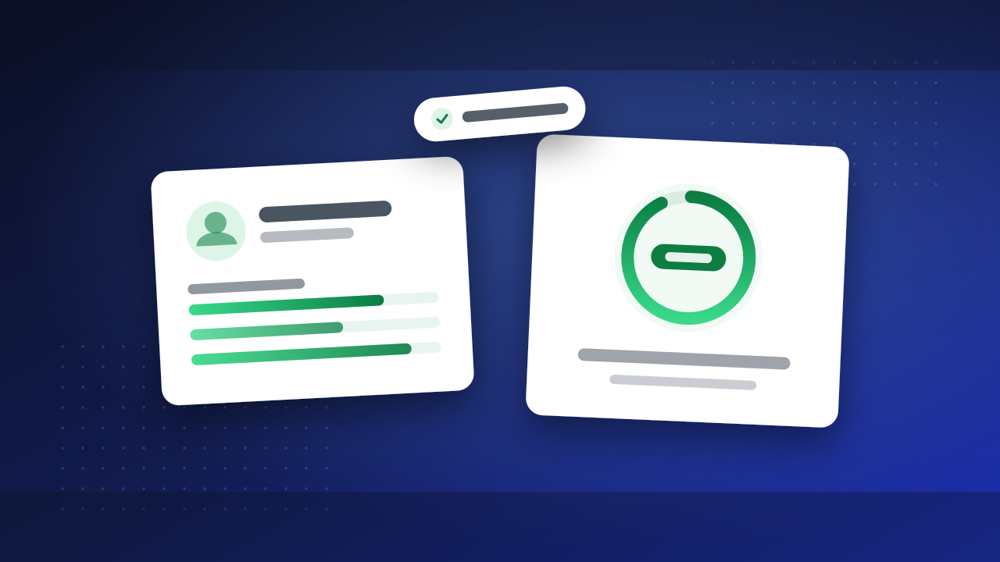

goLance · AI marketplace
Matching trust — designing the UX for goLance's AI cultural-fit engine
At marketplace scale, matching on skills alone kept producing mismatched, short-lived engagements — the real gap was cultural and working-style fit.
The company was betting on AI to close that gap. But AI matching only creates value if hiring users trust and act on what the model surfaces — my job was to make opaque, probabilistic outputs legible and credible inside real hiring decisions. I owned design end-to-end across the freelancer portal, client side, payments, and the platform's AI features; the models were built by the AI/data team.

The Cultural Fit Assessment: an LLM-supported, scenario-based evaluation where adaptive questions build a real cultural profile.
I designed it end-to-end — how AI-generated questions branch, and how answers resolve into an individual profile that the matching model can actually use.

Compatibility scores read as confidence, not verdicts — placed at the decision point, informing the hire without overclaiming certainty the model couldn't back.
Matching is a learning model rather than static scoring, and the interface had to say so honestly. "Best Match" indicators live inside the hiring flow, right where the decision happens.

Designing for imperfect AI: on Mango AI, every summary, insight and flagged issue keeps its reasoning inspectable — so people trust it enough to act.
For the contractor-management assistant I prioritized what a client needs to verify before believing an automated flag, rather than presenting model output as fact.

Also part of the work
- Rebuilt payment and checkout by mapping drop-off, cutting steps, and clarifying cost and confirmation states.
- Designed the core work-verification workflows — dashboards, scheduling, time tracking, in-hours session monitoring — balancing employer verification against freelancer transparency.
- Drove marketplace-wide usability through IA and interface consistency; contributed to the marketing website.
The result: +25% project engagement, −22% checkout drop-off, −40% support load — and hiring users acting on model outputs they used to ignore.
Broader usability work cut task-completion time by 30%. Looking back, I'd push explainability further — surfacing why a match scored the way it did, not just how confident the model is.
UX research · information architecture · interaction design · AI/LLM UX · design systems · WCAG accessibility · cross-functional work with AI/data · Figma
Let's talk
Open to senior product-design roles across Poland — hybrid or remote, B2B or employment contract.